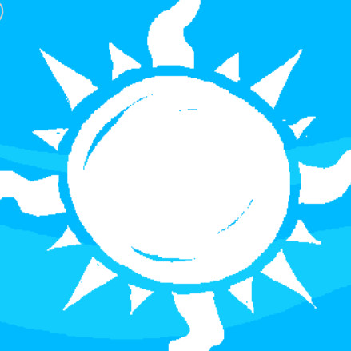

Home
/
Unreleased Tracks
/
Spider Dance
(
Previous
,
Next
,
Random
)
Unreleased Tracks
Tracks featured in Homestuck
Unreleased Homestuck tracks
Tracks from Pesterquest
Tracks originating outside of Homestuck
69423
A Bell is Tolling
Ah! vous dirai-je, maman
Amen, Brother
An Apple Disaster!!
Axel F
Bad Apple!!
Battle! (Colress)
Beginning
Bloody Tears
Bowman Remix
Breath of the Wild Theme
Burn
Calamari Inkantation
Carol of the Bells
Chrono Trigger
CORE
Corridors of Time
Courage
Creeping in My Soul
Danger! High Voltage
Death by Glamour
Deck the Halls
Drop It Like It's Hot
Doctor Who Theme
E.T.
Eight Melodies
Eternal Recurrence
Fall of Fall ~ Autumnal Waterfall
First Call
Frog's Theme
Fruity Pebbles Jingle
Fuck tha Police
Greensleeves
Ghostbusters
God Rest You Merry, Gentlemen
Guile's Theme
Historia Crux
Hopes and Dreams
How Do I Live
Hydrocity Zone (Act 2)
Hydrogen
I Don't Want to Miss a Thing
Icirrus City
In the Hall of the Mountain King
It Don't Mean a Thing (If It Ain't Got That Swing)
JoJo ~Sono Chi no Sadame~
La Cucaracha
Layton's Theme
Life in Technicolor
Mad About the Boy
Magical Hopalong Cassidy Station
Magnificat
Mailtime
Master of Puppets
Meet the Flintstones
Menu (Full)
Moon Over the Castle
Moonsong
My Little Pony Theme
Spider Dance
Spooktune
Native Faith
Neos City (Night)
Nyanyanyanyanyanyanya!
Objection! 2001
Paint It, Black
Polovtsian Dances
Potato Knishes
Pushing Onwards
Recruitment Theme
Reverse Situation
Revolution 909
RollerCoaster Tycoon Theme
Rosanna
Ryuunosuke Akutagawa's "Kappa" ~ Candid Friend
Safe Return
Science Blaster
September Pumpkin
Sleeping Terror
Space Jam
Stone Tower Temple
Supercalifragilisticexpialidocious
Swan Song
Terra's Theme
The Cave You Fear
The Court of Miracles
The Decisive Battle
The Little Sprite
The Number of the Beast
The Primal Scene of Japan the Girl Saw
The Raising Fighting Spirit
The Riddle Wants To Be
The Ultimate Showdown of Ultimate Destiny
Theme of Eastern Story
To Make the End of Battle
Toccata and Fugue in D minor
Tomboyish Girl in Love
Tomorrow There'll Be More Of Us
Toreador Song
Uptown Funk
Ultimate Koopa
Vela-Nova
Viva la Vida
Waters of Nazareth
Westminister Quarters
Wind-up Storm
Wind Scene
Winterfall
Yahoos and Triangles
You Gained a Level!
Your Best Friend

Spider Dance
By
Toby Fox
.
Duration: 1:46.
Listen on
YouTube
.
Tracks that reference
Spider Dance
:
Fandom:
Daydreamer
by
electric lantern
{kind=link}